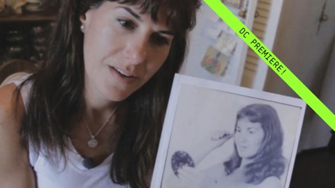

About the film
The film follows the revolutionary rise of the controversial “citizen investigative journalist” collective known as Bellingcat, a group of online researchers dedicated to exposing the truth of impenetrable news stories from around the world. Bellingcat’s impact is examined through the lens of its current investigations, as well as the high-profile conflicts the group has previously reported. With governments growing less reliable by the day and traditional newspapers declining in relevance and reach – how does Bellingcat, dismissed by some critics as an assortment of “armchair researchers”, attain such a prominent status in the new world order of news? The filmmaker takes us on a quest to understand the group’s innovations, challenging our concept of journalism.
At the festival
- 2019 DC Premiere · Saturday, October 12, 2019 · 12:00 PM · Naval Heritage CenterPost-screening conversation to follow with film subjects Christiaan Triebert and Claire Wardle
More films on these topics

My Underground MotherMarisa Fox2026 · 86 min- A Thousand CutsRamona Diaz2020 · 98 min
 Short CutsIn Event of Moon Disaster2020 · 82 min
Short CutsIn Event of Moon Disaster2020 · 82 min- The Art of Political MurderPaul Taylor2020 · 80 min
 End of TruthEric Matthies, Tricia Todd2017 · 58 min
End of TruthEric Matthies, Tricia Todd2017 · 58 min